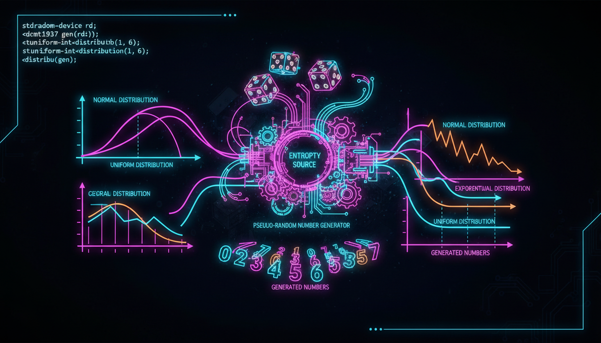

rand, random, distributions, генератори

C++11 надає потужну бібліотеку <random> для генерації випадкових чисел.
#include <iostream>
#include <random>
int main() {
// Сучасний спосіб (C++11)
std::random_device rd; // Апаратне джерело ентропії
std::mt19937 gen(rd()); // Mersenne Twister
// Рівномірний розподіл [1, 100]
std::uniform_int_distribution<> dist(1, 100);
std::cout << "Випадкові числа: ";
for (int i = 0; i < 10; i++) {
std::cout << dist(gen) << " ";
}
std::cout << std::endl;
// Нормальний розподіл
std::normal_distribution<double> normal(50.0, 10.0);
std::cout << "Нормальний розподіл: ";
for (int i = 0; i < 5; i++) {
std::cout << normal(gen) << " ";
}
std::cout << std::endl;
// Імітація кидка кубика
std::uniform_int_distribution<> dice(1, 6);
std::cout << "Кубик: " << dice(gen) << std::endl;
return 0;
}